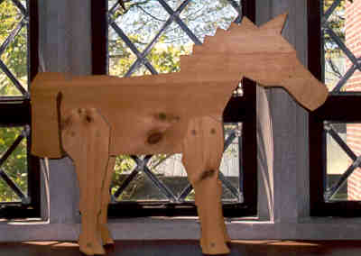

These pages, though they will not be updated, will remain on the web in tribute to Alison Barker (who died in December 2004), a gifted classicist, extraordinary teacher, and highly valued colleague.
LATIN III, 2001-02
THE AENEID IN THE ARTS
|
 |
|
St. Paul's School Trojan Horse |
SPECIAL COLLECTIONS
Index of Images From Vergil MSS Vat. lat. 3225 and 3867
Aeneas on the Greek Mythology Link
Image List for Vergil's Thesaurus from VRoma
BOOK I
Combat between Diomedes and Aeneas, red-figure Greek vase
Vulcan and Aeolus, painting by Piero di Cosimo, 1495
Paintings and sculptures of Neptune
Zeus and Thetis (Jupiter and Venus?), painting by Ingres, 1810
Aeneas and Achates on the Libyan Coast, painting by Dossi, 1510
Venus as Huntress Appears to Aeneas, painting by da Cortona
Dido Building Carthage, painting by Turner, 1815
Dido Receiving Aeneas and Ascanius Disguised as Cupid, painting by Solimena, 1720
Aeneas Introducing Ascanius Dressed as Cupid to Dido, painting by Tiepolo, 1757
The Birth of Venus, painting by Boticelli, 1485
Venus and Cupid with a Partridge, painting by Titian, 1550
Venus with Mercury and Cupid, painting by Correggio, 1522
BOOK IISculpture of Laocoon and Sons, 1st century, CE.
Laocoon, painting by El Greco, 1608
Archaic Greek relief of the killing of a Trojan youth (Astyanax?) by the Greeks
Aeneas, Anchises and Ascanius, black-figure Greek vase
Aeneas, Anchises and Ascanius on a Roman Coin
Aeneas, Anchises and Ascanius, ancient relief
Aeneas, Anchises and Ascanius in fresco by Raphael, 1514
Bernini sculpture of Aeneas and Anchises, 1618-19
Aeneas Carrying Anchises, painting by Loo, 1729
The Fall of Troy, Multimedia Path
BOOK IVDido and Aeneas out hunting, mosaic from Lo Ham Roman villa, 4th Century CE
Mercury Appearing to Aeneas, fresco by Tiepolo, 1757
Mercury Sent to Admonish Aeneas, painting by Turner, 1850
Aeneas' Farewell to Dido in Cathago, painting by Lorrain, 1676
The Death of Dido, Rubens, 1640, Getty Museum
Death of Dido, pen and ink by Rubens,1601, Bowdoin College
BOOK VIAeneas in the Underworld, Multimedia Path
Cumaean Sybil, fresco by Michelangelo Buonarroti, Sistine Chapel ceiling, 1510
Charon Crossing the Styx, painting by Patenier, 1480-1524
THE AENEID IN OPERADido and Aeneas, Henry Purcell
Listen to music from Dido and Aeneas
Les Troyens Score, Indiana University School of Music
G.Duryea, A. Fox, A. Hoffmann, A. Marsh, G. Oliver, B. Shirley
St. Paul's School, June, 2002
{kind=link}
{kind=link}
{kind=link}
{kind=link}
{kind=link}
{kind=link}
{kind=link}
{kind=link}
{kind=link}
{kind=link}
{kind=link}
{kind=link}
{kind=link}
{kind=link}
{kind=link}
{kind=link}